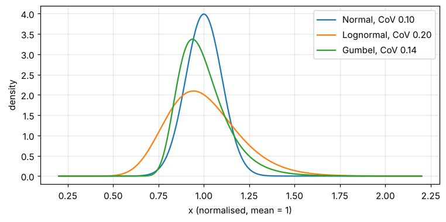
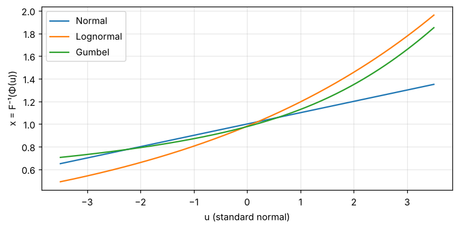
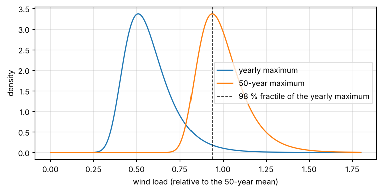

13. Lesson 1 — Random variables and characteristic values#
Code calibration starts from a probabilistic model: every quantity that enters a design — strengths, model uncertainties, self-weights, climatic loads — is a random variable with a distribution, a mean and a coefficient of variation (CoV). The design code, on the other hand, works with a single characteristic value \(x_k\) per quantity and partial factors \(\gamma\) that scale it. This lesson shows how the two worlds connect.
What you will see:
the three distribution families of the model (normal, lognormal, Gumbel),
characteristic values as fractiles,
the transformation to standard-normal space that FORM relies on,
how a yearly-maximum load becomes a 50-year maximum,
the characteristic value of a climatic load by simulation.
Run it cell by cell (Spyder: Ctrl+Enter, VS Code: “Run Cell”) or as a script.
import os
import sys
import numpy as np
try:
import codecal as cc
except ImportError: # not installed: run from the lessons/ folder
sys.path.insert(0, os.path.abspath('..'))
import codecal as cc
from codecal.plots import Figure
FIG = 'figures' # figures are written next to the lesson
os.makedirs(FIG, exist_ok=True)
def save(fig, name):
"""Save a figure next to the lesson and show it (inline in Jupyter/Spyder)."""
fig.savefig(os.path.join(FIG, name), dpi=150, bbox_inches='tight')
try:
from IPython.display import display
display(fig)
except ImportError: # plain python: the PNG in figures/ is the output
pass
13.1. 1. Three distributions from mean and CoV#
All variables of the AHG model are normalised: the mean is 1.0. A distribution is therefore fully described by its family and its CoV.
Normal — self-weights and permanent loads (small scatter, symmetric).
Lognormal — strengths and model uncertainties (positive, skewed; the product of lognormal variables is lognormal, which is why FORM likes it).
Gumbel — maxima of time-variant loads over a period (wind, snow, imposed).
normal = cc.Normal.from_moments(1.0, 0.10)
lognormal = cc.Lognormal.from_moments(1.0, 0.20)
gumbel = cc.Gumbel.from_moments(1.0, 0.14)
x = np.linspace(0.2, 2.2, 400)
fig = Figure(figsize=(8, 3.6))
ax = fig.subplots()
for d, label in [(normal, 'Normal, CoV 0.10'), (lognormal, 'Lognormal, CoV 0.20'), (gumbel, 'Gumbel, CoV 0.14')]:
ax.plot(x, d.pdf(x), label=label)
ax.set_xlabel('x (normalised, mean = 1)')
ax.set_ylabel('density')
ax.legend()
ax.grid(alpha=0.3)
save(fig, 'lesson01_densities.png')

13.2. 2. Characteristic values are fractiles#
Eurocode conventions: strengths use the 5 % fractile, permanent loads the mean (50 %), climatic loads the 98 % fractile of the yearly maximum. The ratio \(x_k/\mu\) depends only on the CoV:
print("5 % fractile of a lognormal strength, relative to the mean:")
for cov in (0.05, 0.10, 0.15, 0.20):
d = cc.Lognormal.from_moments(1.0, cov)
print(f" CoV = {cov:.2f}: x_k/μ = {d.ppf(0.05):.3f}")
5 % fractile of a lognormal strength, relative to the mean:
CoV = 0.05: x_k/μ = 0.920
CoV = 0.10: x_k/μ = 0.844
CoV = 0.15: x_k/μ = 0.774
CoV = 0.20: x_k/μ = 0.708
A larger CoV pushes the characteristic value further below the mean — and that is before any partial factor is applied. Timber (CoV 0.20) starts from 0.72 where steel (CoV 0.05) starts from 0.92.
The AHG input pins steel at 0.83 and aluminium at 0.85 instead of the
computed 0.92 (a legacy of the June-2021 input — the open question is
recorded in codecal/ahg2021.py). The rv() helper accepts either form:
steel = cc.rv('Steel yield strength', 'lognormal', 1.0, 0.05, char=0.83)
concrete = cc.rv('Concrete strength', 'lognormal', 1.0, 0.10, fractile=0.05)
print(steel)
print(concrete)
Steel yield strength: Lognormal(mean=1, CoV=0.05), x_k=0.83
Concrete strength: Lognormal(mean=1, CoV=0.1), x_k=0.844
13.3. 3. The transformation to standard-normal space#
FORM does not work with the physical variables directly. Each variable \(X\) is mapped to a standard-normal variable \(U\) by matching the distribution functions,
In \(u\)-space all variables look alike (mean 0, standard deviation 1, independent), so “distance from the origin” means “how improbable”. The curves below show how far from linear the mapping is: for the normal it is a straight line, for the lognormal and the Gumbel the upper tail bends upwards — a large \(u\) corresponds to a very large load.
u = np.linspace(-3.5, 3.5, 200)
fig = Figure(figsize=(8, 3.6))
ax = fig.subplots()
for d, label in [(normal, 'Normal'), (lognormal, 'Lognormal'), (gumbel, 'Gumbel')]:
ax.plot(u, d.x_of_u(u), label=label)
ax.set_xlabel('u (standard normal)')
ax.set_ylabel('x = F⁻¹(Φ(u))')
ax.grid(alpha=0.3)
ax.legend()
save(fig, 'lesson01_transform.png')

13.4. 4. From yearly maximum to 50-year maximum#
A Gumbel variable describing the yearly maximum \(Q_1\) has distribution function \(F_1\). The maximum over 50 independent years has \(F_{50} = F_1^{50}\), which is again Gumbel with the same scatter \(\sigma\) and a mean shifted by
The AHG model gives the 50-year maximum with mean 1 and CoV 0.14 for wind. Going back to the yearly maximum:
wind_50 = cc.Gumbel.from_moments(1.0, 0.14)
wind_1 = wind_50.over_period(1 / 50)
print(f"50-year maximum: mean {wind_50.mean:.3f}, std {wind_50.std:.3f}")
print(f"yearly maximum: mean {wind_1.mean:.3f}, std {wind_1.std:.3f} (CoV {wind_1.cov:.3f})")
print(f"check F_50(1.2) = {wind_50.cdf(1.2):.4f} = F_1(1.2)^50 = {wind_1.cdf(1.2)**50:.4f}")
x = np.linspace(0.0, 1.8, 400)
fig = Figure(figsize=(8, 3.6))
ax = fig.subplots()
ax.plot(x, wind_1.pdf(x), label='yearly maximum')
ax.plot(x, wind_50.pdf(x), label='50-year maximum')
ax.axvline(wind_1.ppf(0.98), color='k', ls='--', lw=1, label='98 % fractile of the yearly maximum')
ax.set_xlabel('wind load (relative to the 50-year mean)')
ax.set_ylabel('density')
ax.legend()
ax.grid(alpha=0.3)
save(fig, 'lesson01_gumbel_periods.png')
50-year maximum: mean 1.000, std 0.140
yearly maximum: mean 0.573, std 0.140 (CoV 0.244)
check F_50(1.2) = 0.9141 = F_1(1.2)^50 = 0.9141

13.5. 5. The characteristic value of a climatic load, with model uncertainty#
The characteristic wind load is the 98 % fractile of the yearly maximum — of the load effect, which carries a model uncertainty \(\Theta_Q\) (lognormal, mean 0.97, CoV 0.26 for wind). The AHG defines \(q_k\) on the product \(\Theta_Q \cdot Q_1\). There is no closed form for the fractile of a lognormal × Gumbel product, so it is simulated. With the seed used throughout, this reproduces the number of the AHG study, \(q_k = 1.083\):
theta_wind = cc.rv('Wind model uncertainty', 'lognormal', 0.97, 0.26, char=1.0)
rng = np.random.RandomState(12345)
Q_wind, Q_wind_yearly = cc.time_variant_load(
'Wind, 50-year maximum', mean=1.0, cov=0.14, T_input=50, T_basic=1, T_ref=50,
theta_Q=theta_wind, fractile=0.98, n_mcs=2_000_000, rng=rng)
print(Q_wind)
print(f"without model uncertainty the 98 % fractile would be {Q_wind_yearly.ppf(0.98):.3f}")
Wind, 50-year maximum: Gumbel(mean=1, CoV=0.14), x_k=1.08
without model uncertainty the 98 % fractile would be 0.936
So the characteristic value is about 8 % above the mean of the 50-year maximum. The partial factor \(\gamma_Q = 1.5\) is applied on top of that: the design value of the wind load is \(1.5 \times 1.083 = 1.62\) times the mean 50-year maximum. Whether that is “enough” is exactly what the reliability analysis of the next lessons decides.
13.6. 6. The whole model at a glance#
model = cc.ahg_model(n_mcs=1_000_000) # 1 M draws for the characteristic values: fast
print(model.summary())
AHG "Reliability Background of the Eurocodes", input of November 2021
reference period 50 a, target β 3.8
9 failure modes × 3 loads × 3 a_G × 10 a_Q = 810 design situations
Failure modes:
Steel bending: Θ_R mean 1.15 CoV 0.05, R CoV 0.050 (x_k 0.830), γ_M 1.0, a_Q (0.3, 0.8), a_G (0.6, 1.0), w 0.17
Concrete compression: Θ_R mean 0.97 CoV 0.14, R CoV 0.100 (x_k 0.844), γ_M 1.5, a_Q (0.1, 0.7), a_G (0.6, 1.0), w 0.12
Concrete bending: Θ_R mean 1.03 CoV 0.07, R CoV 0.045 (x_k 0.928), γ_M 1.15, a_Q (0.1, 0.7), a_G (0.6, 1.0), w 0.4
Glulam bending: Θ_R mean 1.00 CoV 0.10, R CoV 0.150 (x_k 0.774), γ_M 1.25, a_Q (0.2, 0.8), a_G (0.6, 1.0), w 0.035
Timber bending: Θ_R mean 1.00 CoV 0.10, R CoV 0.200 (x_k 0.708), γ_M 1.3, a_Q (0.2, 0.8), a_G (0.6, 1.0), w 0.017
Masonry: Θ_R mean 1.16 CoV 0.18, R CoV 0.160 (x_k 0.760), γ_M 1.5, a_Q (0.1, 0.7), a_G (0.6, 1.0), w 0.12
Aluminium bending: Θ_R mean 1.27 CoV 0.15, R CoV 0.050 (x_k 0.850), γ_M 1.1, a_Q (0.3, 0.8), a_G (0.6, 1.0), w 0.017
Pile foundation: Θ_R mean 1.00 CoV 0.20, R CoV 0.120 (x_k 0.816), γ_M 1.5, a_Q (0.1, 0.5), a_G (0.6, 1.0), w 0.06
Shallow foundation: Θ_R mean 1.00 CoV 0.15, R CoV 0.150 (x_k 0.774), γ_M 1.4, a_Q (0.1, 0.5), a_G (0.6, 1.0), w 0.06
Variable loads:
wind: Θ_Q mean 0.97 CoV 0.26, Q Gumbel CoV 0.140 (q_k 1.084), ψ₀ 0.6, w 0.4
snow: Θ_Q mean 0.81 CoV 0.26, Q Gumbel CoV 0.200 (q_k 0.821), ψ₀ 0.5, w 0.1
imposed: Θ_Q mean 1.00 CoV 0.10, Q Gumbel CoV 0.260 (q_k 1.350), ψ₀ 0.7, w 0.5
Load-effect model uncertainty: Lognormal(mean=1, CoV=0.1), x_k=1
Permanent load (other than self-weight): Normal(mean=1, CoV=0.1), x_k=1
13.7. Exercises#
What is the 5 % fractile of a normal strength with CoV 0.20? Compare with the lognormal — which one is more conservative, and why?
Compute the characteristic snow load \(q_k\) (CoV 0.20 for the 50-year maximum, model uncertainty mean 0.81, CoV 0.26). Why is it below 1?
The imposed load has a basic period of 5 years and a 99 % fractile. Build it with
time_variant_loadand compare the simulated \(q_k\) with the value 1.35 pinned in the AHG input.